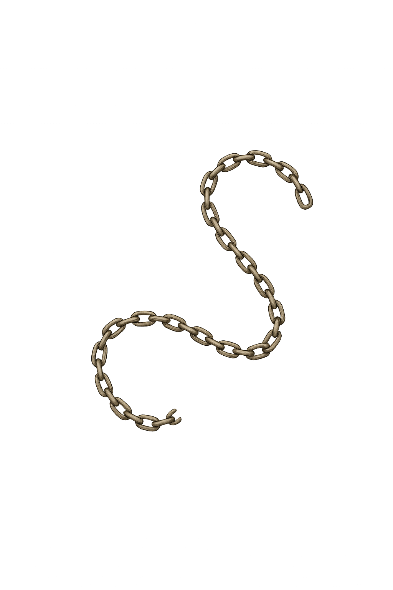

Case Closed is an interactive investigative experience that blends storytelling with user-centered design. The project challenges users to engage with a digital crime scene by analyzing clues, interpreting visual information, and making connections to solve a narrative-driven mystery.
Designing an interactive crime scene experience requires balancing narrative tension with clear usability. The challenge was to guide users through a complex mystery without hand-holding — letting them feel like real investigators while ensuring the interface never got in the way.
We researched how detective games and mystery narratives structure information disclosure to keep players engaged without frustrating them. This shaped how we paced clue reveals and designed the flow of the experience.
We mapped out the investigation flow before building, iterating on layout and interaction to ensure clue discovery felt natural and rewarding.




Explore the interactive prototype to experience the full investigation flow.
Case Closed taught me how interface design and narrative structure can work together to shape user behavior. Designing for a mystery experience pushed me to think carefully about information hierarchy, visual pacing, and how to create tension through design — skills that carry over into any user-centered work.